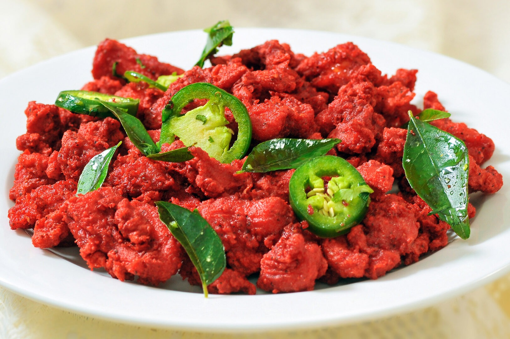

Chicken 65

Ingredients
- 1/2 lb of 1/2" cubed chicken tenderloins (or thighs)
- 2 tbsp red chili pepper (up to your taste really...)
- 1/2 tbsp turmeric
- 1/3 tbsp ground cumin
- 1/3 tbsp ground fenugreek
- 1/3 tbsp ground coriander
- 1 tbsp salt
- 2 tbsp grated ginger
- 2 tbsp grated garlic
- 1 tbsp red food coloring (optional but recommended for that beautiful color!)
- 1/2 cup corn starch
Instructions
- Mix all ingredients excluding the corn starch in a bowl
- Let the chicken marinate for at least 30 minutes
- While your chicken marinates, heat a pan up with vegetable oil to about medium-high
- Place chicken in pan and turn frequently to evenly cook chicken
- Serve on plate with paper towel and enjoy